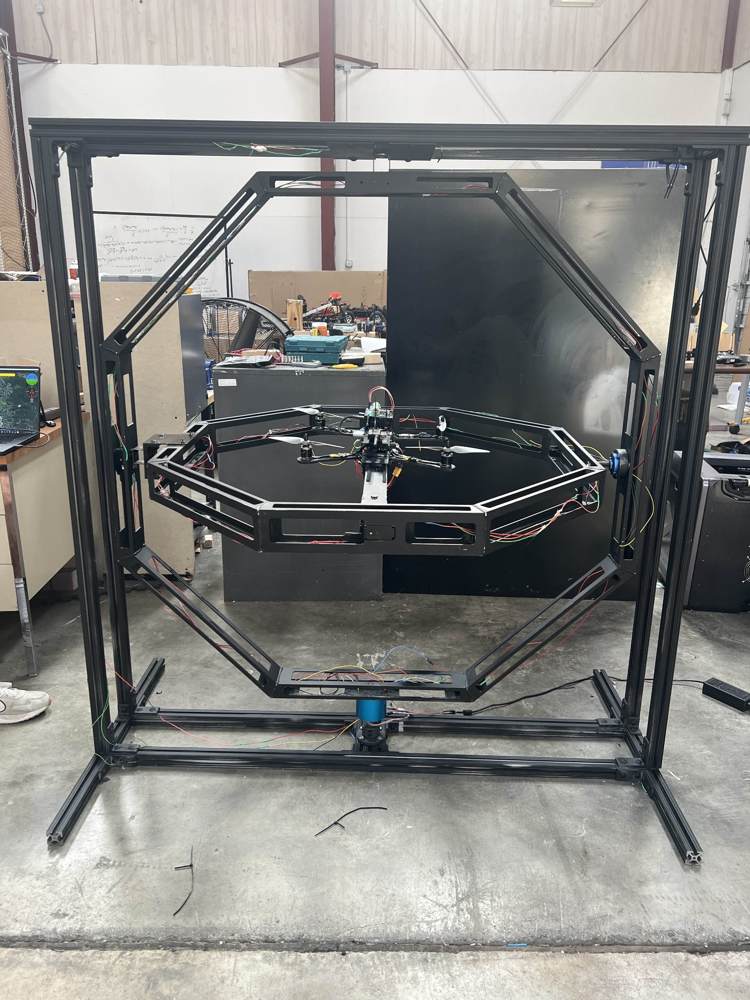

Research Project • Aug 2024 – Aug 2025
I spent the academic year building and refining a three-degree-of-freedom (3-DOF) thrust stand to support controlled experiments for UAV control-system tuning. To reduce mass and improve responsiveness we rebuilt the structure and optimized its weight distribution. Using a makeshift mini thrust stand we characterised the thrust produced by various motor, ESC and propeller combinations. A MATLAB script fit the static data to a seventh-order polynomial, providing an accurate motor model for the inner loop of our custom control algorithm. In addition I helped reassemble the airframe and rig it to the stand so the team could tune controllers with the full system in the loop.
Source code: github.com/Malhar618/thruststand
